Assets de Poly Haven
Ok, vous avez configuré votre clavier, et ajouté votre profil de touches et colorway. L’appareil photo encadre bien le sujet, mais l’éclairage et le plancher ne sont pas ce que vous voulez.
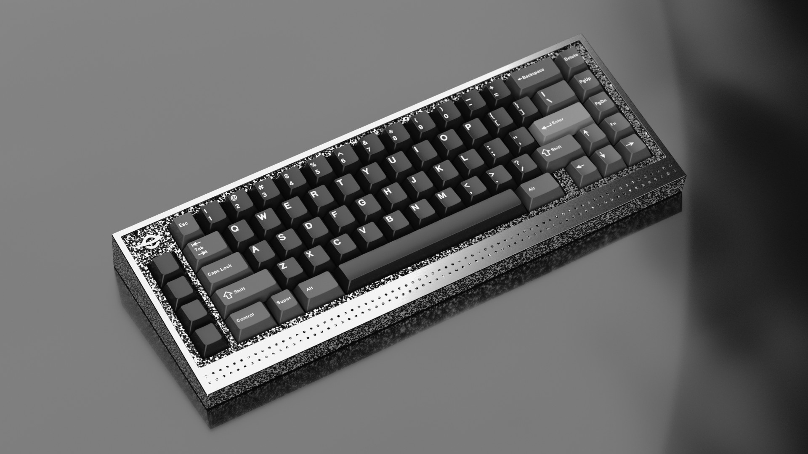
KRK est livré préchargé avec différents planchers et réglages de lumière pour vous faire démarrer, mais vous pouvez essayer d’autres planchers et éclairages pour ajouter plus de variété. Polyhaven est une excellente ressource pour les surfaces pour rendre votre claviers sur ainsi que HDRIs (High Dynamic Range Image) pour éclairer votre scène.
Une grande partie de ce processus peut être ignorée si vous possédez le Poly Haven addon. Si vous vous trouvez à faire cela souvent, je le recommande fortement.
Plancher
Visitez d’abord le site Poly Haven (polyhaven.com) et cliquez sur Assets>Textures dans la barre supérieure.
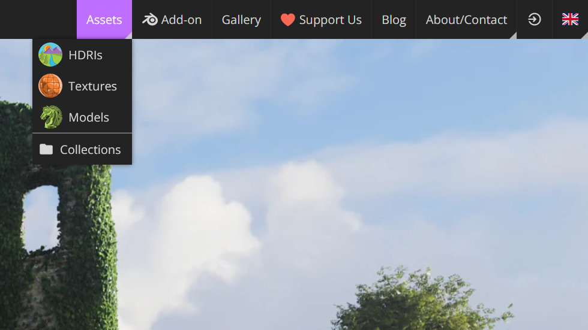
Pour cet exemple, cliquez sur la catégorie Floor>Indoor>Man-Made et choisissez Slab Tiles.
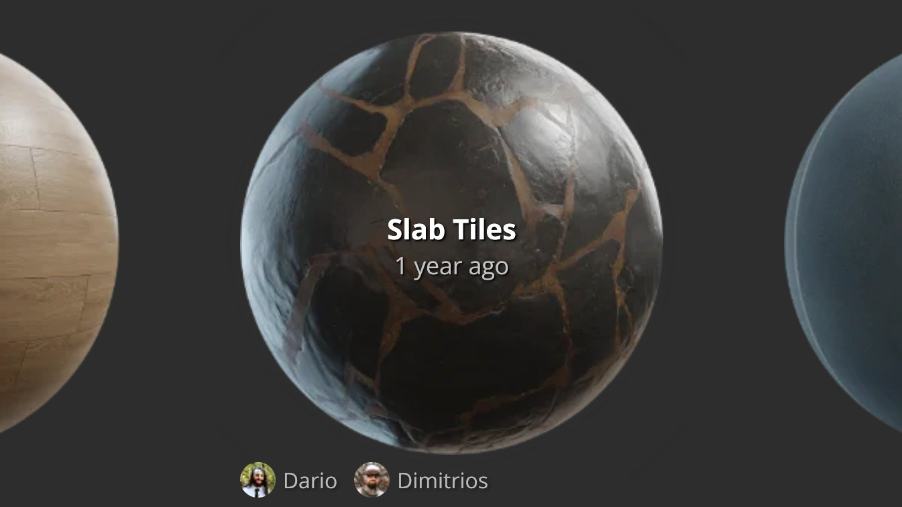
Cliquez sur le bouton de téléchargement et laissez le fichier zip à télécharger. Parcourez l’emplacement de téléchargement et extraire le fichier zip dans son dossier respectif. Vous remarquerez qu’il y a un fichier .blend dans le dossier. Cela signifie qu’il y a déjà un objet qui est déjà configuré pour l’utilisation.
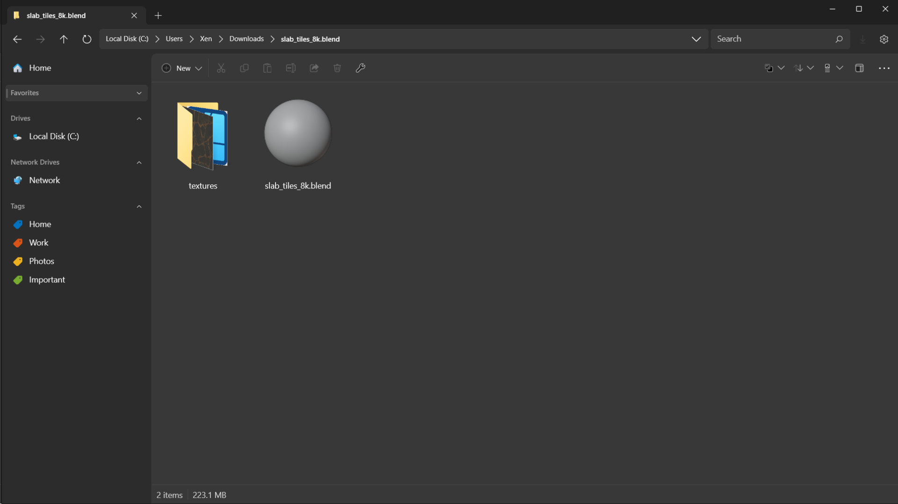
Pour importer Fichier .blend contenu, vous devez utiliser la fonction Append ou Link pour l’introduire. Pour ce processus, nous allons ajouter le plancher et ne pas maintenir un lien vers l’original. Dans Blender, cliquez sur Fichier>Append pour lancer l’importation du plancher Poly Haven. À partir d’ici, choisissez la sous-catégorie Objet et trouvez le plancher qui est probablement appelé « Plane ».
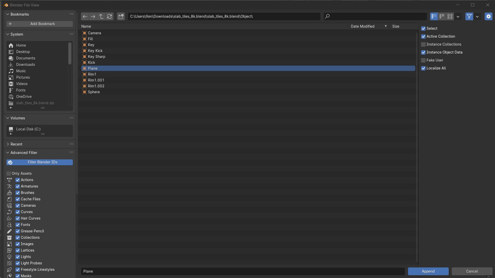
Il s’ajoutera à la collection que vous avez active dans l’esquisse. Avec le plancher dans votre scène, vous pouvez maintenant y apporter des modifications.
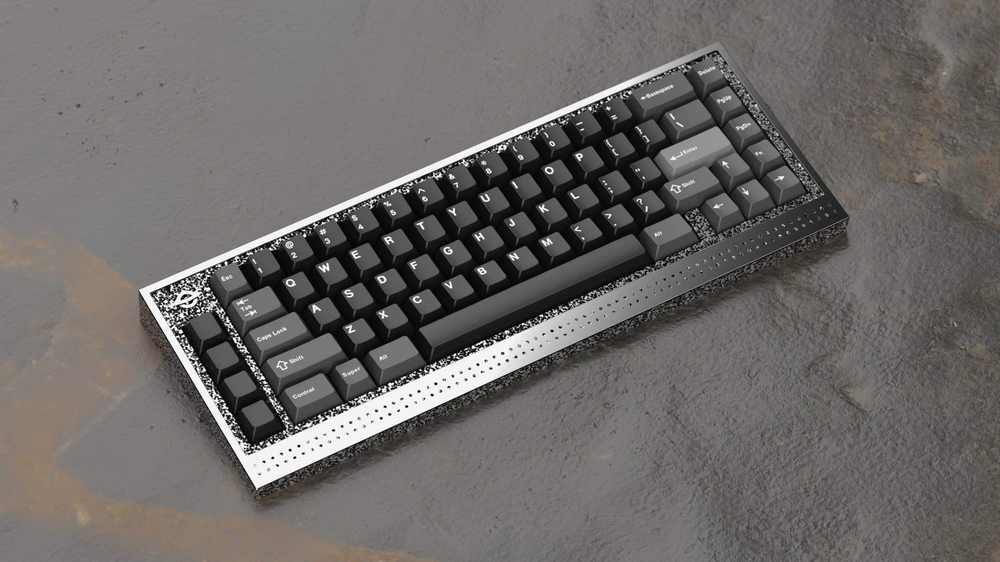
Par défaut, il n’y a pas assez de géométrie pour que le déplacement pousse et l’échelle de la texture se sent trop grande pour le contexte. Changez cela en branchant un nœud de valeur dans l’échelle et définissez cela à 2 pour doubler l’échelle. Sur la base de mon angle de caméra, j’ai également utilisé le nœud de mappage pour déplacer la texture 80mm. Dans l’onglet modificateur, trouvez le modificateur de subdivision et changez le niveau de subdivision à 10 afin d’avoir plus de géométrie pour supporter le détail de l’image de déplacement.
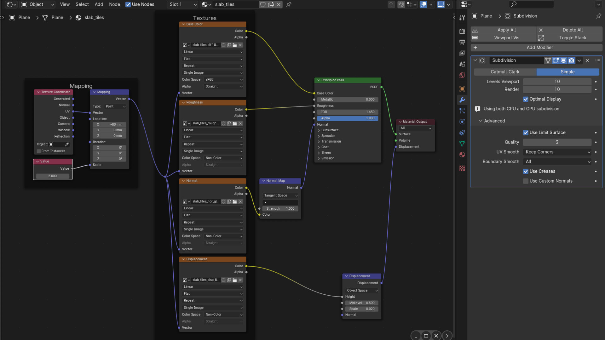
Comme il y a un déplacement, Il est également une bonne idée de déplacer l’objet de plancher vers le bas. Celui-ci a été déplacé 7mm. Le plancher est maintenant prêt pour le rendu.
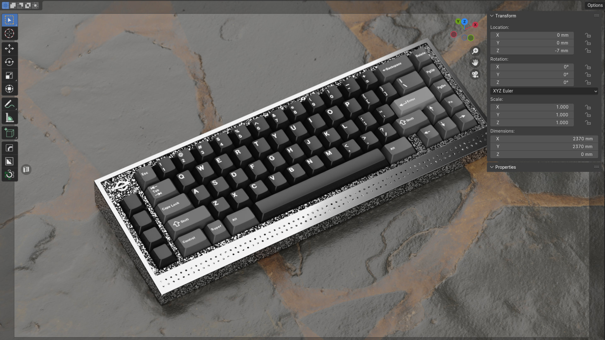
Environnement
Gardez à l’esprit que si l’éclairage HDRI ajoute un degré de réalisme, il affecte également la couleur, ce qui est bien pour clavier et la scène rend mais pas pour le kit rend où la précision de la couleur est critique. Pour en ajouter un, allez à Poly Haven et cliquez sur Assets>HDRIs et choisissez un à télécharger. Dans cet exemple, nous utilisons Leadenhall Market qui télécharge comme fichier d’image EXR.
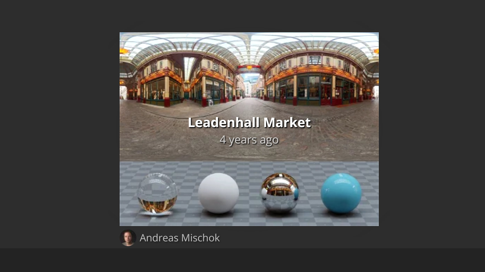
Désactivez la collection Lumières dans le Outliner.
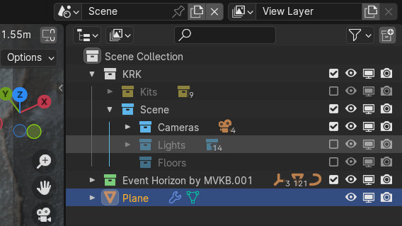
Ensuite, dans l’éditeur de matériel, cliquez sur le menu déroulant en haut à gauche et switch il de l’Objet vers le monde. Il y a déjà un monde configuré. Réactiver le nœud d’image en le sélectionnant et en appuyant sur M, puis cliquez sur Ouvrir pour charger dans l’image de marché de Leadenhall.
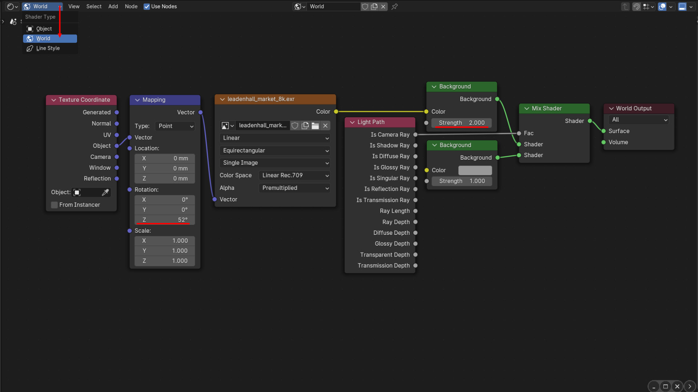
Vous voudrez peut-être manipuler l’image afin de créer un nœud de cartographie et une Texture Coordonnée et le connecter comme vu dans l’image. Ici, j’ai tourné l’image de 52 degrés pour trouver un point fort intéressant sur le bord droit du clavier et également doublé l’intensité du HDRI.
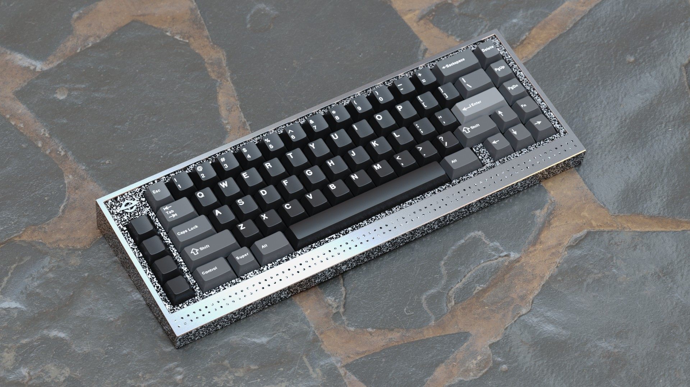